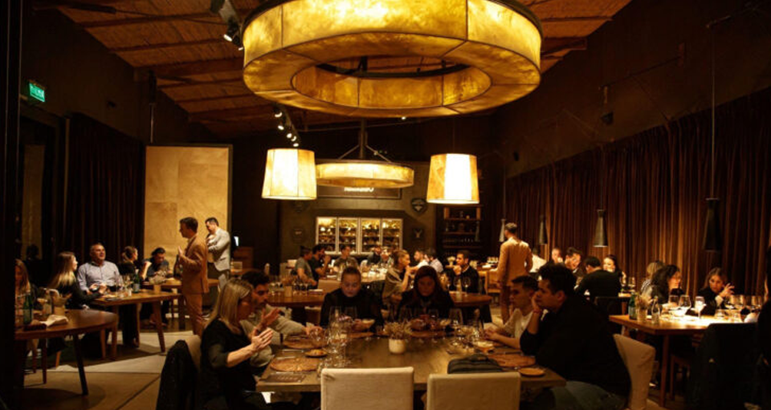
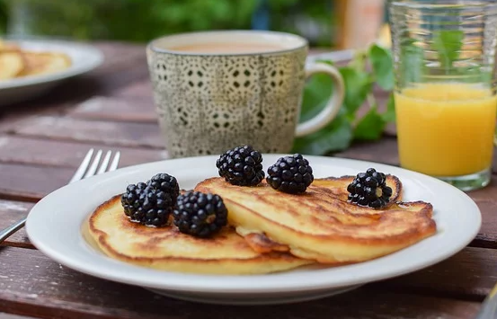
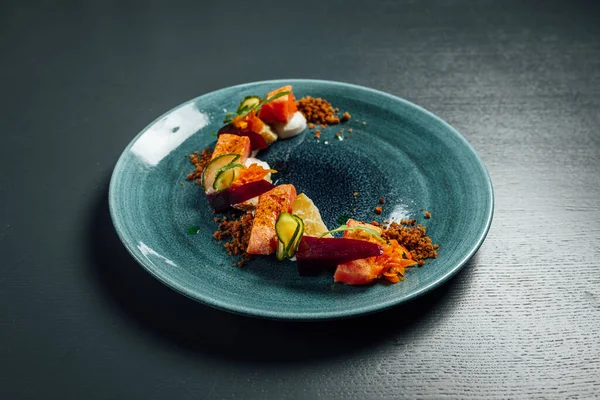
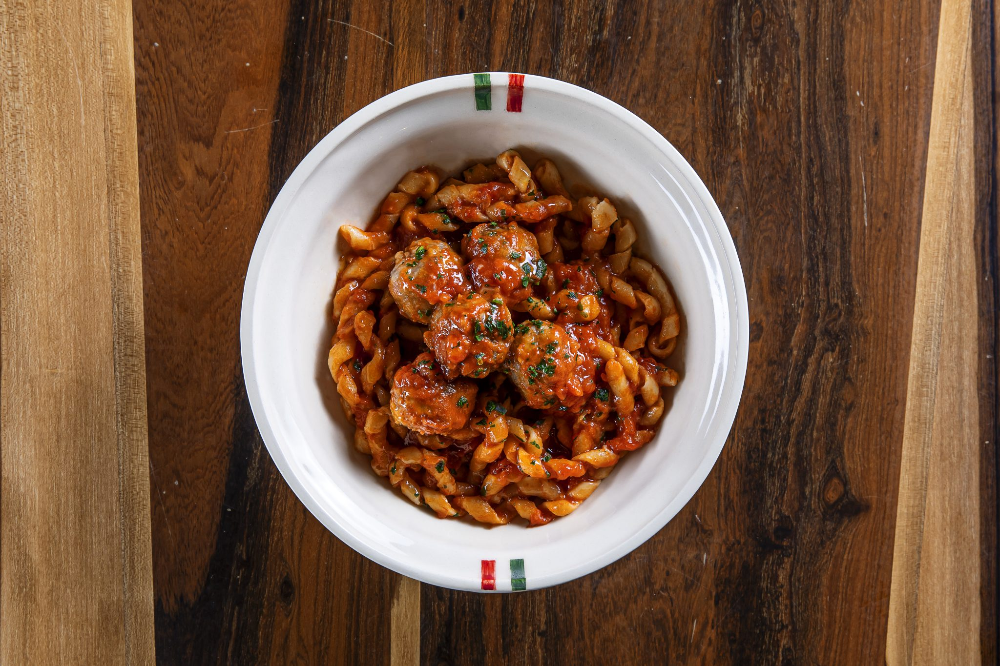
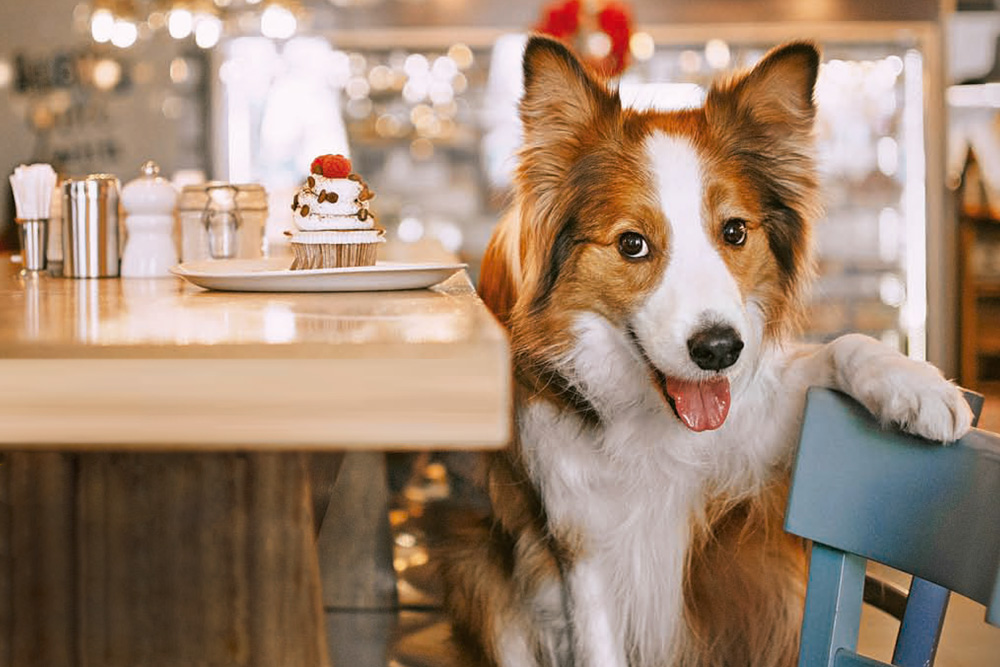
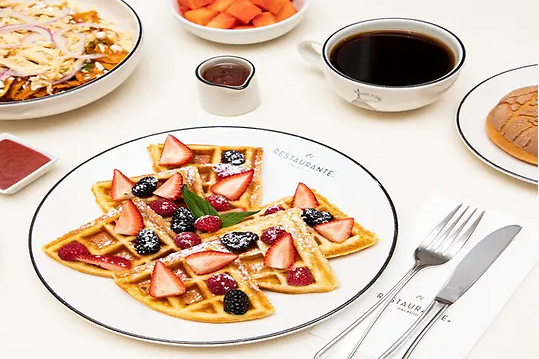
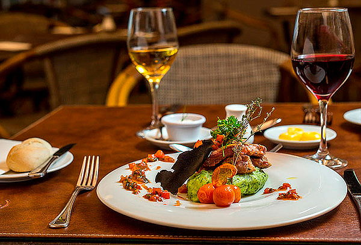
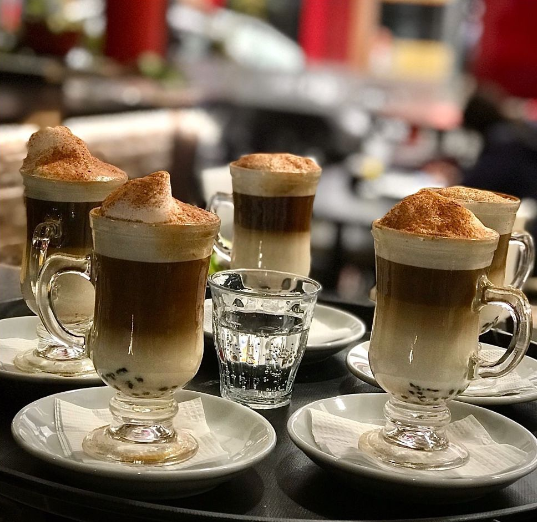

UNA FUSION ENTRE LA COMIDA TRADICIONAL Y LA MODERNA.
Mientras nos mantenemos fieles a las recetas tradicionales, JOTAM aspira a incorporar elementos de la cocina moderna para sumar nuevas experiencias a nuestros paladares.

NOSOTROS
"Nuestros orígenes se remontan a 1940, cuando nuestro fundador, Juan Manuel, comenzó su apasionado viaje en el mundo de la cocina. Guiado por su amor por los sabores auténticos y su dedicación a la excelencia culinaria, nuestro fundador estableció las bases de lo que hoy es JOTAM. Desde entonces, hemos llevado consigo el legado de calidad, autenticidad y hospitalidad que nos distingue.
En JOTAM, nos enorgullecemos de nuestra larga historia y tradición culinaria. A lo largo de los años, hemos evolucionado y crecido, pero siempre hemos mantenido nuestro compromiso con la calidad y la atención al detalle en cada plato que servimos. Nuestra pasión por la cocina sigue siendo el motor que impulsa cada una de nuestras creaciones, y estamos comprometidos a ofrecer experiencias gastronómicas memorables a nuestros clientes.
CONOCENOS
Visite nuestro local para experimentar un lugar único, disfrutar un espacio de absoluta tranquilidad y saborear una deliciosa y creativa propuesta gourmet. Tenemos una carta muy variada, pensada para que usted tenga una grata experiencia y atención de calidad en cualquier momento del día



SOMOS PETFRIENDLY



